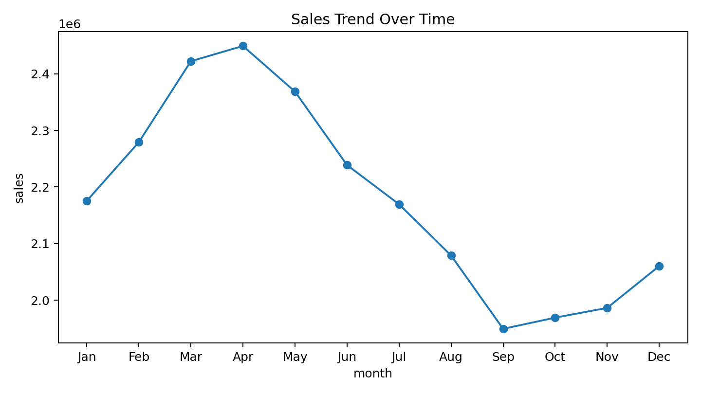
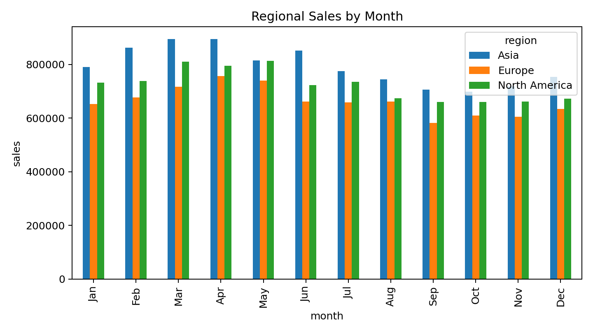
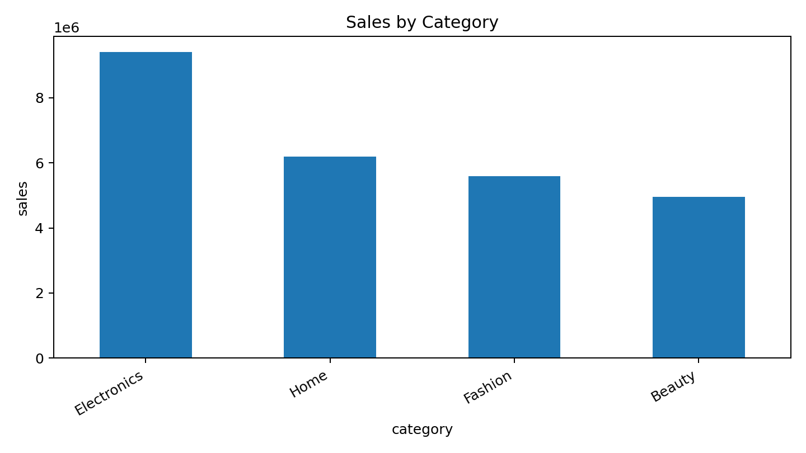
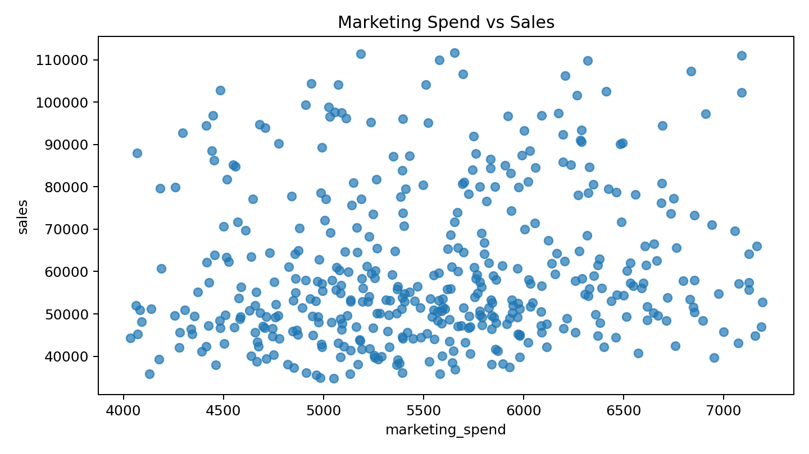

Generated deck preview
Purpose: Set the context for the deck.
Purpose: Summarize the business trajectory over time.

Purpose: Compare the strongest markets.

Purpose: Explain which categories drive the business.

Purpose: Evaluate the relationship between spending and results.

Purpose: End with concise recommendations.